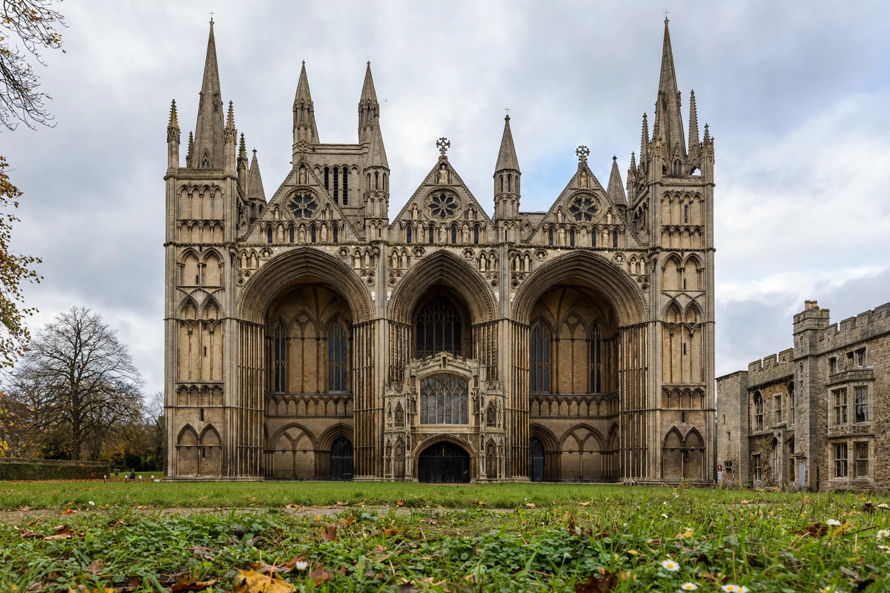

From Wikipedia, the free encyclopedia
| Peterborough Cathedral | |
|---|---|
| Full name | Cathedral Church of St Peter, St Paul and St Andrew |
| Location | Peterborough, Cambridgeshire, England |
| Denomination | Church of England |
| Founded | Abbey founded 655; present church begun 1118 |
| Style | Norman / Romanesque, Early English Gothic west front |
| Burials | Catherine of Aragon; Mary, Queen of Scots (later moved) |
Peterborough Cathedral, properly the Cathedral Church of St Peter, St Paul and St Andrew, is the seat of the Bishop of Peterborough in the city of Peterborough, England. One of the finest Norman buildings in England, it is celebrated for its unique Early English Gothic west front with three enormous arches, its largely unaltered Romanesque interior, and its painted wooden nave ceiling, the only one of its kind surviving in Britain.
An abbey was founded on the site about 655 and destroyed by Vikings in 870; the rebuilt abbey church was itself burned in an accidental fire in 1116. The present building was begun in 1118 under Abbot John de Sais and consecrated in 1238. At the Dissolution of the Monasteries, Henry VIII spared the church by making it a cathedral in 1541 — possibly because his first wife, Catherine of Aragon, buried there in 1536, was honoured at Peterborough. Mary, Queen of Scots was also buried here in 1587 before her reburial in Westminster Abbey in 1612. The cathedral suffered damage during the Civil War, when Parliamentary soldiers destroyed the cloister, chapter house, and much stained glass.
The nave retains its original painted ceiling of about 1220, decorated with kings, bishops, saints, and grotesques. Behind the high altar, the "New Building" (c. 1500) is a fine example of Perpendicular fan vaulting. The Hedda Stone, a carved Anglo-Saxon memorial of about 800, survives in the choir.
Peterborough · Catherine of Aragon · Norman architecture
